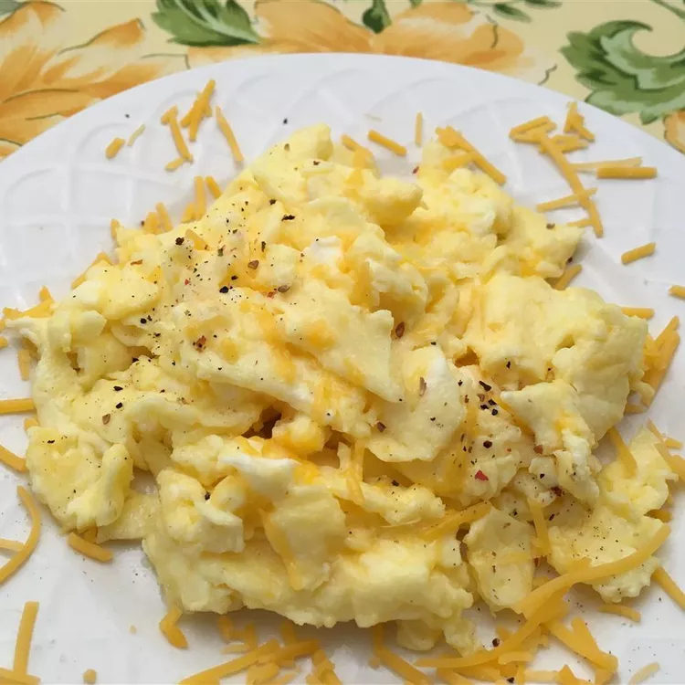

Scrambled EGGS
Home

For when you want a classic plate of cheesy comfort food, these Best Scrambled Eggs are sure to satisfy. They're quick enough for weekday breakfasts too, taking just eight minutes to prepare.
Ingredients
- 2 large eggs
- 2 thin slices cooked ham, diced (Optional)
- 1 teaspoon heavy whipping cream
- 2 tablespoons sliced Cheddar cheese
- ½ teaspoon butter
Directions
- Gather all ingredients
- Whisk eggs in a small bowl until smooth. Mix in ham, Cheddar cheese, and heavy cream.
- Melt butter in a skillet over medium heat. Pour in egg mixture; cook and stir until set but still moist, 3 to 5 minutes.
Enjoy your Breakfast
Home